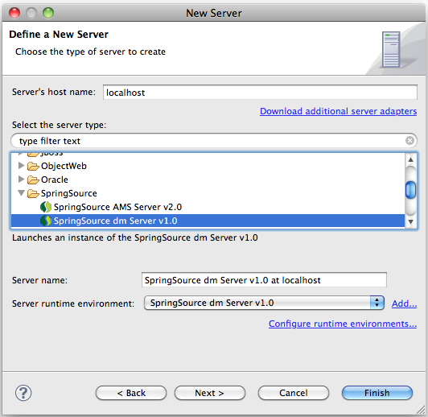
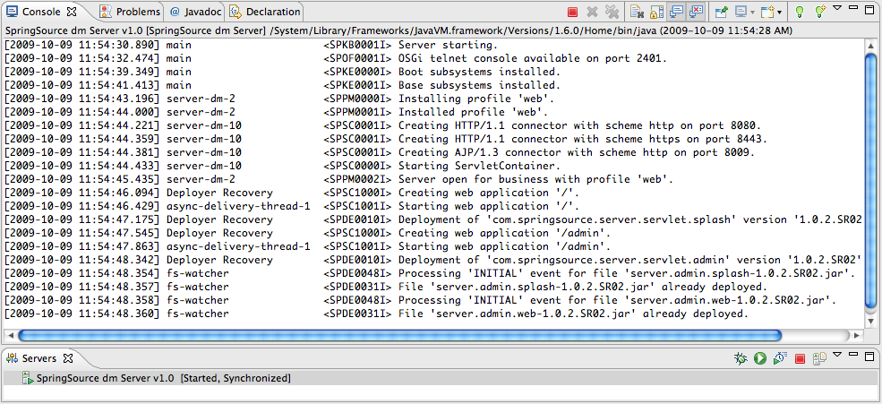

After installing the dm Server Tools from the update site outlined in the previous section, you will be able to configure an instance of the dm Server right inside Eclipse.
To do so bring up the WTP Servers view (i.e., → → → → ). You can now right-click in the view and select " → ". This will bring up a "New Server" dialog. Select "SpringSource dm Server v1.0" in the "SpringSource" category and click "".

Within the "New Server Wizard" point to the installation directory of the SpringSource dm Server and finish the wizard. After finishing the wizard you should see a SpringSource dm Server entry in the Servers view.
To start, stop, and debug the created SpringSource dm Server instance use the toolbar or the context menu actions of the Servers view.
